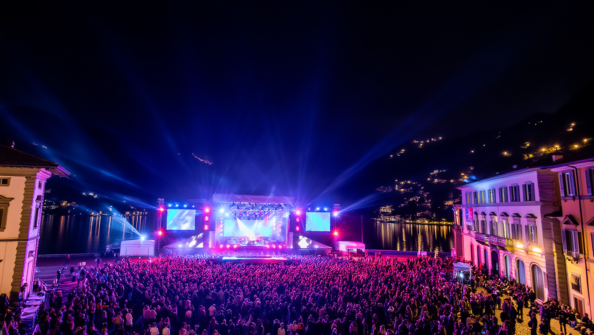

Everything you need to know about Lake Beat · Como
Lake Beat is a music festival created for the young generation, specifically designed for ages 14-20. Born in the heart of Como, we bring together the best of trap and reggaeton music in one of Italy's most beautiful locations: Piazza Cavour.
Two nights of non-stop music, from 20:30 to 04:00, with professional sound, lighting, and stage production. This is not just a party — it's an experience.

The historic heart of Como, right on the lakefront. For two nights, this iconic square transforms into an open-air festival ground with a massive stage, multiple bars, and VIP areas.
Train: Direct trains from Milan to Como Nord Lago every hour. 5 minutes walk to Piazza Cavour.
Car: Parking available at Parcheggio Sant'Agostino and Parcheggio Lago (10 minutes walk).
We focus on the sounds that define a generation: trap and reggaeton, with a touch of urban beats.
Heavy 808s, rapid hi-hats, and raw energy. Artists like Niki, Pyrex, and Slayter bring the heat.
Latin rhythms that make you move. From Anuel AA to Rvfv and Marina, expect non-stop dancing.
Hip-hop, R&B, and curated sets from Como's finest DJs, filling the gaps between main acts.
Behind the scenes, a team of experienced professionals ensures everything runs smoothly.
Professional L-Acoustics sound system with dedicated engineers. Crystal clear sound across the entire square.
20-meter wide custom stage with LED walls, professional lighting rig, and multiple levels for artists.
8 bars with trained staff, fast service, and a wide selection of drinks. Average wait time under 5 minutes.
Licensed security, medical team on site, and clear emergency protocols. Your safety is our priority.
How your night at Lake Beat unfolds
Yes, the festival is designed for ages 14-20. Minors under 16 must be accompanied by an adult. ID check at entrance.
Small bags, empty water bottles, phones, cameras. No professional recording equipment, no outside drinks, no weapons.
Multiple parking garages within 10 minutes walk. We recommend taking the train — Como Nord Lago station is 5 minutes away.
No re-entry. Once you leave, you can't come back in. Plan your night accordingly.
Yes, there are ATMs near the entrance. Bars also accept cards and contactless payments.
The festival is rain or shine. Stages are covered. Only extreme weather would cancel.
June 12-13, 2026 · Piazza Cavour, Como